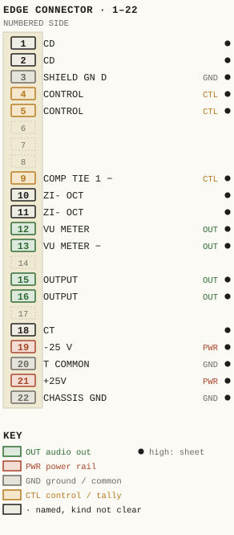
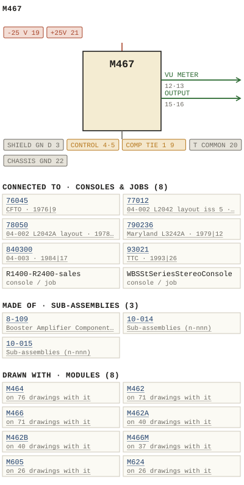

M467
| Type | module |
| Category | DYNAMICS |
| Try it | simulator & front panel · download package (zip) |
| Earliest dated evidence | 1976|9 — title-block date |
| Evidence | "DATE DEC 76" in PUBLIC/Manuals + tech DOCUMENTS/Modules/M467-567 - Noise Gate and Meter Module/M467-567 - P025 - B467-01-001.jpg |
| Confidence | high |
| All years found | 1976|9, 1980|13, 1985|18 |
| Used in jobs | 76045 (1976|9), 77012 (1977|10), 78050 (1978|11), 790236 (1979|12), 840300 (1984|17), 93021 (1993|26), R1400-R2400-sales, WBSStSeriesStereoConsole |
| Folder | DOCUMENTS/APK/wbs 001 |
| Folder | DOCUMENTS/Done/Done - L2042 Console |
| Folder | DOCUMENTS/Done/Done - L3242 Console |
Connections and circuit (ideal SPICE model)
Drawn live from its RTO-144 connections: run the generator, turn the gain, watch the VU. Open the netlist to see how the model is built.
Pictures


M467.pinout.svg

M467.connections.svg 1976 - 467-01-001 - NOISE GATE & METER MODULE FUNCTIONAL DIAGRAM - DRN DNM - ISS 3.jpg
1976 - 467-01-001 - NOISE GATE & METER MODULE FUNCTIONAL DIAGRAM - DRN DNM - ISS 3.jpg 1976 - M467 - 467-01-001 - RZLA FUNCTIONAL DIAGRAM.jpg
1976 - M467 - 467-01-001 - RZLA FUNCTIONAL DIAGRAM.jpg 1980 - M467 - WBS test procedures 3.jpeg
1980 - M467 - WBS test procedures 3.jpeg 1985 - M467 - 567 - P001 - Title Page.jpg
1985 - M467 - 567 - P001 - Title Page.jpg 1976 - M467 - 467-02-001 - UNLES OTHERWST STID ALL RELDTOTT'.jpg
1976 - M467 - 467-02-001 - UNLES OTHERWST STID ALL RELDTOTT'.jpg 1976 - M467 - 467-04-001 - METER MODULE ALE CONNECTOR REAR VIEW.jpg
1976 - M467 - 467-04-001 - METER MODULE ALE CONNECTOR REAR VIEW.jpg 1976 - M467 - 467-04-002 - COMP TIE COHPRESSOR STEREO TIE SWITCH.jpg
1976 - M467 - 467-04-002 - COMP TIE COHPRESSOR STEREO TIE SWITCH.jpg 1976 - M467 - 467-06-001 - USDOJ MATI.jpg
1976 - M467 - 467-06-001 - USDOJ MATI.jpg 1976 - M467 - 567 - P002 - 1-1.jpg
1976 - M467 - 567 - P002 - 1-1.jpg 1976 - M467 - 567 - P003 - 1-2.jpg
1976 - M467 - 567 - P003 - 1-2.jpg 1976 - M467 - 567 - P004 - 2-1.jpg
1976 - M467 - 567 - P004 - 2-1.jpg 1976 - M467 - 567 - P005 - 3-1.jpg
1976 - M467 - 567 - P005 - 3-1.jpg 1976 - M467 - 567 - P006 - 3-2.jpg
1976 - M467 - 567 - P006 - 3-2.jpg 1976 - M467 - 567 - P007 - 3-3.jpg
1976 - M467 - 567 - P007 - 3-3.jpg 1976 - M467 - 567 - P008 - 4-1.jpg
1976 - M467 - 567 - P008 - 4-1.jpg 1976 - M467 - 567 - P009 - 4-2.jpg
1976 - M467 - 567 - P009 - 4-2.jpg 1976 - M467 - 567 - P010 - 4-3.jpg
1976 - M467 - 567 - P010 - 4-3.jpg 1976 - M467 - 567 - P011 - 5-1.jpg
1976 - M467 - 567 - P011 - 5-1.jpg 1976 - M467 - 567 - P012 - 5-2.jpg
1976 - M467 - 567 - P012 - 5-2.jpg 1976 - M467 - 567 - P013 - 5-3.jpg
1976 - M467 - 567 - P013 - 5-3.jpg 1976 - M467 - 567 - P014 - 5-4.jpg
1976 - M467 - 567 - P014 - 5-4.jpg 1976 - M467 - 567 - P015 - 5-5.jpg
1976 - M467 - 567 - P015 - 5-5.jpg 1976 - M467 - 567 - P016 - 8-109-1-0.jpg
1976 - M467 - 567 - P016 - 8-109-1-0.jpg 1976 - M467 - 567 - P017 - 8-109-1-1.jpg
1976 - M467 - 567 - P017 - 8-109-1-1.jpg 1976 - M467 - 567 - P018 - 8-109-1-2.jpg
1976 - M467 - 567 - P018 - 8-109-1-2.jpg 1976 - M467 - 567 - P019 - 8-109-2-1.jpg
1976 - M467 - 567 - P019 - 8-109-2-1.jpg 1976 - M467 - 567 - P020 - 8-109-2-2.jpg
1976 - M467 - 567 - P020 - 8-109-2-2.jpg 1976 - M467 - 567 - P021 - 8-109-2-3.jpg
1976 - M467 - 567 - P021 - 8-109-2-3.jpg 1976 - M467 - 567 - P022 - 8-109-2-4.jpg
1976 - M467 - 567 - P022 - 8-109-2-4.jpg 1976 - M467 - 567 - P023 - 8-109-2-5.jpg
1976 - M467 - 567 - P023 - 8-109-2-5.jpg 1976 - M467 - 8-109-02-002 - WAEDBAC UUTE GLU.jpg
1976 - M467 - 8-109-02-002 - WAEDBAC UUTE GLU.jpg 1976 - M467 - 8-109-06-007 - DUTPUT AMPL IFIER.jpg
1976 - M467 - 8-109-06-007 - DUTPUT AMPL IFIER.jpg 1976 - M467 - R003 - M467.jpg
1976 - M467 - R003 - M467.jpg 1976 - M467 - WBS test procedures 0.jpeg
1976 - M467 - WBS test procedures 0.jpeg 1976 - M467 - WBS test procedures 1.jpeg
1976 - M467 - WBS test procedures 1.jpeg 1976 - M467 - WBS test procedures 2.jpeg
1976 - M467 - WBS test procedures 2.jpeg 1976 - M467 - noise gate and meter module.jpg
1976 - M467 - noise gate and meter module.jpg 1976 - M467 - noise gate and meter module_small.jpg
1976 - M467 - noise gate and meter module_small.jpg 1976 - M467 - noise gate module.jpg
1976 - M467 - noise gate module.jpg 1976 - M467 - wbsps - module - m467 noise gate and meter module 002.jpg
1976 - M467 - wbsps - module - m467 noise gate and meter module 002.jpg 1976 - M467 - wbsps - module - m467 noise gate and meter module 002_small.jpg
1976 - M467 - wbsps - module - m467 noise gate and meter module 002_small.jpg 1976 - M467 - wbsps - module - m467 noise gate and meter module 003.jpg
1976 - M467 - wbsps - module - m467 noise gate and meter module 003.jpg 1976 - M467 - wbsps - module - m467 noise gate and meter module 003_small.jpg
1976 - M467 - wbsps - module - m467 noise gate and meter module 003_small.jpg 1976 - M467 - wbsps - module - m467 noise gate and meter module 004.jpg
1976 - M467 - wbsps - module - m467 noise gate and meter module 004.jpg 1976 - M467 - wbsps - module - m467 noise gate and meter module 004_small.jpg
1976 - M467 - wbsps - module - m467 noise gate and meter module 004_small.jpg 1976 - M467 - wbsps - module - m467 noise gate and meter module 005.jpg
1976 - M467 - wbsps - module - m467 noise gate and meter module 005.jpg 1976 - M467 - wbsps - module - m467 noise gate and meter module 005_small.jpg
1976 - M467 - wbsps - module - m467 noise gate and meter module 005_small.jpg 1976 - M467 - wbsps - module - m467 noise gate and meter module 006.jpg
1976 - M467 - wbsps - module - m467 noise gate and meter module 006.jpg 1976 - M467 - wbsps - module - m467 noise gate and meter module 006_small.jpg
1976 - M467 - wbsps - module - m467 noise gate and meter module 006_small.jpg 1976 - M467 - wbsps - module - m467 noise gate and meter module 007.jpg
1976 - M467 - wbsps - module - m467 noise gate and meter module 007.jpg 1976 - M467 - wbsps - module - m467 noise gate and meter module 007_small.jpg
1976 - M467 - wbsps - module - m467 noise gate and meter module 007_small.jpg 1976 - M467 - wbsps - module - m467 noise gate and meter module 008.jpg
1976 - M467 - wbsps - module - m467 noise gate and meter module 008.jpg 1976 - M467 - wbsps - module - m467 noise gate and meter module 008_small.jpg
1976 - M467 - wbsps - module - m467 noise gate and meter module 008_small.jpg 1977 - 467-02-001 - NOISEGATE & METER MODULE SCHEMATIC - DRN AF - ISS 7.jpg
1977 - 467-02-001 - NOISEGATE & METER MODULE SCHEMATIC - DRN AF - ISS 7.jpg 1984 - 467-03-006 - TRIM POT MTG. BRACKET USED ON M467F - DRN J - ISS 2.jpg
1984 - 467-03-006 - TRIM POT MTG. BRACKET USED ON M467F - DRN J - ISS 2.jpg 19xx - DOC - IMG_7052 copy.jpg
19xx - DOC - IMG_7052 copy.jpg 19xx - DOC - L2042 - P05.jpg
19xx - DOC - L2042 - P05.jpg 19xx - DOC - L3242 - P05.jpg
19xx - DOC - L3242 - P05.jpg 19xx - DOC - 467-04-002 - CIRCUITRY RED LED INDICATOR KHEN DEPRESSED AND ASSOC.jpg
19xx - DOC - 467-04-002 - CIRCUITRY RED LED INDICATOR KHEN DEPRESSED AND ASSOC.jpg 19xx - DOC - WBS sales 25.jpg
19xx - DOC - WBS sales 25.jpg 19xx - DOC - WBS sales 29.jpg
19xx - DOC - WBS sales 29.jpg 19xx - DOC - WBS sales 30.jpg
19xx - DOC - WBS sales 30.jpg 19xx - DOC - WBS sales a.jpg
19xx - DOC - WBS sales a.jpg 19xx - DOC - WBS sales b.jpg
19xx - DOC - WBS sales b.jpg 19xx - DOC - 467-02-001 - NOISEGATE METER MODULE.jpg
19xx - DOC - 467-02-001 - NOISEGATE METER MODULE.jpg 19xx - DOC - 006.jpg
19xx - DOC - 006.jpg 19xx - DOC - 010.jpg
19xx - DOC - 010.jpg 19xx - DOC - 014.jpg
19xx - DOC - 014.jpg 19xx - DOC - 023.jpg
19xx - DOC - 023.jpg 19xx - DOC - 028.jpg
19xx - DOC - 028.jpg 19xx - DOC - 029.jpg
19xx - DOC - 029.jpg 19xx - 467-01-001.jpg
19xx - 467-01-001.jpg 19xx - 467-04-001 - NOISE GATE & COMPRESSOR METER MODULE CONNECTOR REAR VIEW - ISS 1.jpg
19xx - 467-04-001 - NOISE GATE & COMPRESSOR METER MODULE CONNECTOR REAR VIEW - ISS 1.jpg 19xx - 467-04-001.jpg
19xx - 467-04-001.jpg 1977 - 77012 - a (3).jpg
1977 - 77012 - a (3).jpg 1978 - 78050 - a (3).jpg
1978 - 78050 - a (3).jpg 1979 - 790236 - 790236-01-001 - UJA EFFECT JAREV EXT ADU SUYKINC HOST JACRS.jpg
1979 - 790236 - 790236-01-001 - UJA EFFECT JAREV EXT ADU SUYKINC HOST JACRS.jpg 1984 - 840300 - 840300-04-003 - DERS MACHINE CONTNOI PAMEL.jpg
1984 - 840300 - 840300-04-003 - DERS MACHINE CONTNOI PAMEL.jpg 1993 - 93021-01-001 - TTC EVALUATION PACKAGE FUNCTIONAL - DRN PA - ENG PA - ISS 1.jpg
1993 - 93021-01-001 - TTC EVALUATION PACKAGE FUNCTIONAL - DRN PA - ENG PA - ISS 1.jpg 1990 - R1400 - R2400 - 007.jpg
1990 - R1400 - R2400 - 007.jpg 1985 - ST - 030.jpg
1985 - ST - 030.jpg 1976 - M466 - IMG_4629.jpg
1976 - M466 - IMG_4629.jpg 1976 - M466 - IMG_4630.jpg
1976 - M466 - IMG_4630.jpg 1976 - M466 - P06 - 1-2.jpg
1976 - M466 - P06 - 1-2.jpgPrice history
| Year | Kind | Price | Listed as | Effective | Source |
|---|---|---|---|---|---|
| 2005|38 | used market value | 75.00 | M467 Noise Gate and Meter | wbsps - website ARCHIVE/WBSPS 2008/ARCHIVE/old website/PriceGuide.htm | |
| 2006|39 | used market value | 75.00 | M467 Noise Gate and Meter | wbsps - website ARCHIVE/WBSPS 2008/ARCHIVE/jan 2006 shell/priceguide.htm |
Pinout & connections
Each contact as its own documents name it: 17 named (17 high confidence). An empty slot is a contact no page names. Hover a contact for its source; the table under the drawing lists them.
pinout (SVG) · connections (SVG) · pins (JSON)
Pin evidence — 17 contacts
| Pin | Signal | Kind | Confidence | Read from | Source |
|---|---|---|---|---|---|
| 1 | CD also: DYNAMICS IN LEFT (rto-144); DYNAMICS IN RIGHT (rto-144); INPUT (drawing rows); INPUT (drawing rows) | named, kind not clear | high | table | 1985 - M467 - M567 - Noise Gate and Meter Mod…, p. 28 |
| 2 | CD also: DYNAMICS IN LEFT (rto-144); DYNAMICS IN RIGHT (rto-144) | named, kind not clear | high | table | 1985 - M467 - M567 - Noise Gate and Meter Mod…, p. 28 |
| 3 | SHIELD GN D also: SHIELD GND (drawing rows); SHIELD GND (drawing rows) | ground / common | high | table | 1985 - M467 - M567 - Noise Gate and Meter Mod…, p. 28 |
| 4 | CONTROL also: KEY GATE INPUT (rto-144); CONTROL (drawing rows); CONTROL (drawing rows) | control / tally | high | table | 1985 - M467 - M567 - Noise Gate and Meter Mod…, p. 28 |
| 5 | CONTROL also: KEY GATE INPUT (rto-144) | control / tally | high | table | 1985 - M467 - M567 - Noise Gate and Meter Mod…, p. 28 |
| 9 | COMP TIE 1 also: COMP TIE 2 (rto-144); STEREO TIE BUS 1 (rto-144); BUS (drawing rows); BUS (drawing rows) | control / tally | high | rto-144 | M467.rto144.json, p. 1 |
| 10 | ZI- OCT also: COMP TIE 1 (rto-144); COMMON (drawing rows); COMMON (drawing rows) | named, kind not clear | high | table | 1985 - M467 - M567 - Noise Gate and Meter Mod…, p. 28 |
| 11 | ZI- OCT also: COMP TIE 2 (rto-144); BUS (drawing rows); BUS (drawing rows) | named, kind not clear | high | table | 1985 - M467 - M567 - Noise Gate and Meter Mod…, p. 28 |
| 12 | VU METER also: VU METER (rto-144); VU METER (drawing rows); VU METER (drawing rows); EDGEWISE VU METER (prose) | audio out | high | table | 1985 - M467 - M567 - Noise Gate and Meter Mod…, p. 28 |
| 13 | VU METER also: EDGEWISE VU METER (prose); EDGEWISE VU METER (prose); EDGEWISE VU METER (prose); EDGEWISE VU METER (prose) | audio out | high | rto-144 | M467.rto144.json, p. 1 |
| 15 | OUTPUT also: DYNAMICS OUT LEFT (rto-144); DYNAMICS OUT IN (rto-144); OUTPUT (drawing rows); OUTPUT (drawing rows) | audio out | high | table | 1985 - M467 - M567 - Noise Gate and Meter Mod…, p. 28 |
| 16 | OUTPUT also: DYNAMICS OUT LEFT (rto-144); DYNAMICS OUT IN (rto-144) | audio out | high | table | 1985 - M467 - M567 - Noise Gate and Meter Mod…, p. 28 |
| 18 | CT | named, kind not clear | high | table | 1985 - M467 - M567 - Noise Gate and Meter Mod…, p. 28 |
| 19 | -25 V also: 25V (drawing rows); 25V (drawing rows) | power rail | high | rto-144 | M467.rto144.json, p. 1 |
| 20 | T COMMON also: COMMON (rto-144); COMMON (rto-144); ±COMMON (drawing rows); ±COMMON (drawing rows) | ground / common | high | table | 1985 - M467 - M567 - Noise Gate and Meter Mod…, p. 28 |
| 21 | +25V also: +25 V (rto-144); +25V (drawing rows); +25V (drawing rows) | power rail | high | table | 1985 - M467 - M567 - Noise Gate and Meter Mod…, p. 28 |
| 22 | CHASSIS GND also: CHASSIS (rto-144); CHASS/S GND (drawing rows); CHASS/S GND (drawing rows) | ground / common | high | table | 1985 - M467 - M567 - Noise Gate and Meter Mod…, p. 28 |
Dates found in the documents
| Year | Kind | Text | File |
|---|---|---|---|
| 1976|9 | title-block date | DATE DEC 76 |
1976 - 467-01-001 - NOISE GATE & METER MODULE FUNCTIONAL DIAGRAM - DRN DNM - ISS 3.jpg |
| 1976|9 | title-block date | DATE DEC 76 |
1976 - M467 - 467-01-001 - RZLA FUNCTIONAL DIAGRAM.jpg |
| 1976|9 | title-block date | DATE DEC 76 |
1976 - M467 - M567 - Noise Gate and Meter Module.pdf |
| 1985|18 | manual issue date | MANUAL ISSUE #4 SEPTEMBER 1985 |
1976 - M467 - M567 - Noise Gate and Meter Module.pdf |
| 1980|13 | title-block date | Issue 2 MARCH 80 |
1980 - M467 - WBS test procedures 3.jpeg |
| 1985|18 | manual issue date | MANUAL ISSUE #4 SEPTEMBER 1985 |
1985 - M467 - 567 - P001 - Title Page.jpg |
| 1985|18 | manual issue date | MANUAL ISSUE I. W :// SEPTEMBER 1985 |
1985 - M467 - M567 - Noise Gate and Meter Module.pdf |
Physical manual inventory
| Item | Location | Status | Scanned |
|---|---|---|---|
| M467-M567 - Noise Gate and Meter Module | PDF - Already scanned |
Documents (2)
| Year | File | |
|---|---|---|
| 1976|9 | 1976 - M467 - M567 - Noise Gate and Meter Module.pdf | note |
| 1985|18 | 1985 - M467 - M567 - Noise Gate and Meter Module.pdf | note |
Photos & scans (146)


Sub-assemblies & parts used (3)
| Item | What | Family | Year | How we know |
|---|---|---|---|---|
| 8-109 | Booster Amplifier Component Layout | Sub-assemblies (n-nnn) | 1974|7 | drawing filed with it |
| 10-014 | Sub-assemblies (n-nnn) | 1988|21 | named in its manual | |
| 10-015 | Sub-assemblies (n-nnn) | 1988|21 | named in its manual |
Parts list — board 8-109 (19 parts)
From 1976 - M467 - M567 - Noise Gate and Meter Module.pdf, page 19 (scanned); also in timelines/data/bom.csv.
| Ref | Part | Value | Manufacturer | Mfr part no. |
|---|---|---|---|---|
| C5 | pF Philips | 4.7 | 2222-638-09478 | |
| C9 | uF/25 V Kemet | 10 | T390C 106M025AS | |
| C10 | pF Philips | 4.7 | 2222-638-09478 | |
| C14 | uF/25 V Kemet | 10 | T390C 106M025AS | |
| C17 | delete S:9 | |||
| CR4 | 09 ,{0t v 16' ;h : Ttn | |||
| R6 | Resistor 1/4w 5% Philips | 6k2 | 701i36083 | |
| R15 | 250mzo delete S (= PaU 0' | |||
| R16 | 2i0/-aca Sf 4C 2 ( iT3 | 22k | ||
| R17 | Oro(-840-06 SS 4G 0 [ SrJ | 4K7 | ||
| R22 | LK7 wlb Ft ~ | |||
| R27 | nom factory selected 5o | 470 | ||
| R28 | 1095 4K7 ~oienb [0 | 28 | ||
| R30 | Resistor 1/2w 6.8 C0 | 5% | ||
| R35 | Tlo Ms 82 | 5.6 | ||
| R36 | Lk7 Wait notaics? 'A | 20 | ||
| R38 | delete cao E7 | |||
| C6 | Capacitor PF Philips 90 | 4.7 | 2222-638-09478 | |
| R1S | Resistor 1/4w 240 1 2 | 5% |
Parts list — board M467 (50 parts)
From 1976 - M467 - M567 - Noise Gate and Meter Module.pdf, page 11 (scanned); also in timelines/data/bom.csv.
| Ref | Part | Value | Manufacturer | Mfr part no. |
|---|---|---|---|---|
| M46Z | M567 NISE GATE AND METER_MQDULE | |||
| C1 | Capacitor uF/25 V Philips 03016229 71 | 22 | ||
| C5 | T4V( uF/25 Kemet | 10 | T390C1O6MO25AS | |
| C7 | PF Philips | 22 | 2222-638-10229 | |
| C8 | uF/25 V Kemet | 10 | T390C1O6MO25AS | |
| C10 | PF Philips | 22 | 2222-638-10229 | |
| C15 | "Jeq uF/10 V 6' | 33 | ||
| C16 | 0NVI pF Philips | 220 | 2222-630-03221 | |
| C17 | Foo/a PF | 8. 2 | 2222-638-09828 | |
| C21 | Jaemc uF/10 V Kemet | 33 | T3900336M010AS | |
| C25 | pF Philips | 15 | 2222-638-10159 | |
| C27 | delete | |||
| C29 | delete | |||
| R3 | e} -0l =2 I__CcS 85J | 15k | ||
| R6 | 074L-6 SSss i8K 05j | |||
| R7 | iook | |||
| R8 | Urafe 6- 10Ok 24 82 122 | 9 | ||
| R10 | iIifo SSS 18K 17 Gfc Z03 | 3 | ||
| R1S | Potentiometer A/B WIBS 10-003 029 | 2k5 | ||
| R16 | Resistor 1/4w 4K7 Philips 629 | 59 | ||
| R17 | 07 , 109 PTs 1"; = 52R | 15k | ||
| R18 | W4 ' 7012iesn 229 | 15k | ||
| R19 | ACF | 620 | ||
| R24 | 0( Pca | 47k | ||
| R27 | Iafi | 4K7 | ||
| R28 | Trim Pot Piher PTiOV [0| | 5k | ||
| R29 | PtiOV 4os | 20k | ||
| R30 | Resistor 1/4w 15m Philips 237 | 5% | ||
| R32 | Potentiometer A/B WBS 10-014 Yaa | 7k5 | ||
| R33 | Resistor 1/4w 59 Philips N'" Hon | 10K | ||
| R34 | 7q 72 #V #cTetrsx ear | 22k | ||
| R36 | ZOu 1/2w 10K 43i'v? #Vic | 5% | ||
| R37 | 7 20. 21/4w 18K Swe | 57 | ||
| R39 | fosm | | 18K | 603ni) F9lsnpo1n| | |
| R45 | Trim Pot Piher PTiOV Sk 0 | 5k | ||
| C1I | uF/35 Kemet | T390A 104MO35AS | ||
| R46 | Potentiometer SK A/ B WBS | 10-015 | ||
| R52 | Trim Pot Sk Piher PTIOV Fi9 | |||
| R53 | Resistor 1/4w 5% Philips 8(8 | 43K | ||
| R59 | 1OOK | |||
| R63 | Voi-2 '7'T | 10k | ||
| R66 | Tcf | 10K | ||
| R68 | Trim Pot Piher PtiOv ILk | 500 | ||
| R69 | Resistor 1/2w 59 Philips | 10k | ||
| SW2 | WBS | 11-058 | ||
| M467 | NOISE GATE AND MEJER_MODULE | |||
| SW1 | Button (Red) FG-RED | |||
| M567 | NOISE GATE AND METER MODULE | |||
| R15 | Knob (Black ) Elma | 021-3525 | ||
| R4B | Knob (Black) | 021-3525 |
Consoles & jobs it is connected to (8)
Their own drawings name this module.
| Job | Year | Drawing | Page |
|---|---|---|---|
| 76045 | 1976|9 | 1976 - 76045 - 01-001.pdf | 1 |
| 77012 | 1977|10 | 1977 - 77012 - a (3).jpg | 1 |
| 78050 | 1978|11 | 1978 - 78050 - a (3).jpg | 1 |
| 790236 | 1979|12 | 1979 - 790236 - 790236-01-001 - UJA EFFECT JAREV EXT ADU SUYKINC HOST JACRS.jpg | 1 |
| 840300 | 1984|17 | 1984 - 840300 - 840300-04-003 - DERS MACHINE CONTNOI PAMEL.jpg | 1 |
| 93021 | 1993|26 | 1993 - 93021-01-001 - TTC EVALUATION PACKAGE FUNCTIONAL - DRN PA - ENG PA - ISS 1.jpg | 1 |
| R1400-R2400-sales | 1990 - R1400 - R2400 - 007.jpg | 1 | |
| WBSStSeriesStereoConsole | 1985 - ST - 030.jpg | 1 |
Named in other drawings & documents (25)


From the manuals
Each manual split into its sections. Text that is the same in many Ward-Beck manuals (warranty, address, standard notes) is kept once on the Boilerplate page and linked.
General description (6)
Description — 1172 words · 1976 - M467 - M567 - Noise Gate and Meter Module.pdf, page 5
M467/m567 NO ISE GATE AND METER_MODULE Audio_Channel (9v? | i6.1ni KTezt"jOC 81"~- V2]07 67; 0a # ieox " 3 0 :cL? 19 '9 , 31"2an I The input signal enters the M467 module via pins and of the edge connector Integrated circuits 21 and 22 serve a5 the input amplifier. R45 is part of the input amplifier circuit and is used to trim the overaii module gain to unity _ Are Following the input amplifier, the audio signal is split into [Wo pa ths, connected t0 the two inputs of the differential amplifier 23 In the path feeding the non-inverting input of 23 , the ATTENUATOR control R46 as weli a5 the components form ing the gate circuit are located . Under normal operating conditions I.e with the unit process _ ing the audio signal at unity gain, 04 is conducting, thereby effectively shorting the non- inverting input of 23 . This causes 23 I0 operate as an inverting amplifier . When 04 is not conducting, the output of 23 is the difference of the signals fed to the inverting and non-inverting inputs of 23 and in this manner attenuation is achieved; control R46 is fully clockwise, the signals at the inverting and non-inverting inputs of 23 are near equal and maximum attenuation of 50 dB i5 achieved The output of 23 is fed directly to the input of the 8-109A output amplifier. The actively balanced output of the 8-109A is brought out at pins 15 and 16 of the edge connector 0s OF) : C0 4 ' : L 3 '2[:0080 120q 60n "70 01 U*'0 fo7 Control Channel 60 in . "ifpd 0r1*0"'9q" The inputs of the control channel and the audio channel are internally tied together by means of jumper wires As an alterna- tive, the jumpers can be removed and the control amplifier can be operated from an external signal via edge connector pins and 5 _ Co 25 and 26 form the preamplifier for the control section To prevent over 'loading, clipper circuit consisiting of 01 and 02 is used in the feedback path of 26 _ The second half of 25 together with 27 forms the output section of the control amplifier CRS and CR6 rectify the output of the control amplifier and prov ide the input to comparator 28 'Jc (2 {d 1 | Ocuouorc) ~fi| o3 / 1b RISA/B controls the noise gate switching THRESHOLD by determining the gain of the control amplifier The THRESHOLD control is cali- brated in absolute levels from t0 -50 dBm providing gating THRESHOLD range from dB below the normal operating upper limit of +8 dBm t0 40 dBm below the normal operating lower Iimit of -10 dBm. 3-1
WAAD-BECK BysTems LTD: OTJ Bmitayb AWab-QAAW ciRcuit
M467/m567 NOLSE GATE AND METER MODULE When the noise gate is processing signal level higher than the threshold Ievel the output of 28 will be at positive power supply potential (+21V) As result, 03 wili be saturated and Zero potential wili be present at the dc control bus feeding 29 , pins and and the gate of 04 This wili cause 04 t0 conduct and the audio signal is processed without attenuation as described earlier. Once the signal Tevel drops below the threshold level the comparator 28 wili switch to zero volts, cutting off 03 C13 wili commence charg ing 4t rate determined by the values of R3O and the reflected impedance represented by the bootstrap amplifier 29 (pins 2,3) The RELEASE control R32 allows control of the charging rate and is calibrated from 0.1 to seconds, determining the rate at which the audio signal is being aftenuated after dropping below tne threshold level: X - ne ^ 79/il476 2"7 | Tc Textd 70 UC When the audio signal rises again above the threshold level , 28 wili switch t0 positive output, caus ing 03 to g0 into conduction and discharge C13 at rate defined by the component values of the attack network R28, R29 and C12 R28 and R29 are factory adjusted to allow for recovery rate of approximately one millisecond. Any faster transition wiii result in an audible Fourier click. Once C13 is fully discharged, the control bus feeding the gate of QL wili have returned to its original positive potential and the noise gate wiii be operating again at unity gain. 74J 44302 Gate R#ng5 -] Qibug 00i ~OA 3TiGns 0371013 2]J9ni 9 ; ; 074- 23 and 04 form the gate circuit. As described eari lier, 23 acts as differential amplifier a5 long as 04 is in the off-state, i.e. with the audio signal gated off _ The amount of attenuation depends on the difference of signal amplitude entering 23 at pins and 3 R52 , the gate nuli control, is factory set 0 allow the ATTENUATION control R46 t0 cover the range from to 50 dB with 04 in the off-state. 24 feeds portion of the audio signal t0 the gate of 04 t0 cancel out the effects of non linearities of 04 . 1cichs JLni+ Ar When C4 is driven into conduction, it effectively shorts pin of 23 and causes 23 to operate as an inverting amplifier, resulting in the noise gate t0 function again at unity gain. Icincj Sn; 40 0'62 #n1 e7/f6@ 6nli Jojo m3t 6 - 4] G) )? Isv9/ c O2Ji ni {ifnu 1 '" | | ~Jaqu pfii: 6 J4GO VfLt 'Ori 7407" [ Mcisd 86 Iani Srae7 (,.'0h23ar! ([ - ~Ju imi| Jswo1 21 ,67940 Batoi Jrx Y_IcC KeC 0e "] r8t 3 " Ta 727) 3-2
WAAD-BeCK Bystems LTD; CIRcuiT
M467/m567 NOISE GATE AND METER MODULE Gate_Indicator The output of 03 activates the green LED GATE indicator by way of 29 (pins 5,6,7) The indicator is ON when the noise gate is processing the signal and OFF when the signal is gated off or attenuated_ Noi se Gate Insert Switch In the released or OFF position, the NOISE GATE INSERT switch Sw1 shorts the dc control bus feeding 04, forcing the unit to operate at unity gain under all conditions. With Sw1 in the ON position, the short is removed and the unit is enabled to gate the signal as described The INSERT indicator DS2 wili iuminate with Swi depressed _ Power Supply _ Decoupl Iing An active power supply decoupling network consisting of 05 through 010 provides high degree of isolation between the ML67/m567 and the +/-25 volt supply rails. Transistors 07 and 08 serve as current monitors and wili limit the current flow ing through the Pass transistors 05 and 010 in the event that excessive powe
- source: 1976 - M467 - M567 - Noise Gate and Meter Module.pdf, p. 5
Description — 398 words · 1976 - M467 - M567 - Noise Gate and Meter Module.pdf, page 17
8-109 AMPLIEIER_SERIES The 8-109 series of amplifiers are utilized as an internal component within various WBS series of audio console modules. Each 8-109 amplifier mounts as plug-in assembly onto the module motherboard. Jo '0 O8L Of _ The 8-109 amplifier provides an actively balanced output with +30 dBm capability _ It is employed as an output or booster amplifier with either balanced or an unbalanced input. T?, C ~~ensin}] The following specifications apply t0 the 8-109 series of amplifiers. Unit Input 78/) |cine 00 " . 8 9ri i Oj P0F1t , Gain rp#n S5 4 ( 384|8 L Un: (gVo -: 6c 8-109 Balanced 15 dB 8-109A Unbalanced JiLJ' ] 7 dB 109? ' | JAT Dn6 8-109B Balanced 7oT2i6n8n: 8 418 dB eE;1 <' 788i-J 8-109C Balanced 39 dB "othramg 8-1090 Unbalanced Uitt 9 (_8 54; 29 dB L67 9ri n ! 01 704 4 8-109E Balanced 6@ 29 dB 17@ 27 ]32 0416 ACo; -C 8-109F Balanced Aone:A ;4J7i 33 dB 90 VG" U 8-1096 Balanced uanl DjjniiGcrV 23 dB slenie Frequency Response: "1603- +/- 0.2 dB from 20 Hz t0 20 kHz . #4t 776i2 '03 #0 /#mna" 5431 UQJio I7ot2n PJc" [ nc 74 nor: Noise: Ls_ncizinu F? 108 dBm EIN from 20 Hz to 20 kHz . UC'1' 6|; uon Jrj T0 97J.2 7-|" " 000| 479 EOT aioiino? buei Harmonic Distortion: Less than 0.19 THD from 20 Hz to 20 kHz at +30 dBm output (typically less than 0.02% 39 o 94'6v 941 Odom at mid-band) Fr St 2 18 /T/|cin# F10 pne 79 /" / 4d 1? 47ac L;s 287* ldel: Zn01,297 0*18 Source Impedance 600 ohms or less, balanced or unbalanced Input mpedances: Jrb Models with balanced input: Sk ohms 7orw AquJer Juon; Sh| minimum. (30 4euo n; Zp 55) 0oi e? V8c 7,93 0i62 8-109A : 30k ohms . 02 Icos ETC ; € Wu0 | gn; L, 6 | 6d 969 :0 8-109D : 4700 ohms. #A 0A Jc Zeui0v 9n; J &CiJO 5 / 70/'|one 10 @q0 Jct 03 aic ns,uG6 iEneie Input Levels: FF 20ii Depending on gain or particular model and system operating Tevels (Refer t0 gain specifications above.) 6ns Ta" uje eot-8 Iabor. 0 Dv Juai, #at 397n6(6u Output mpedance Less than 100 ohms eniq 96 JLU ire "d Load Impedance 600 ohms, balanced _ 8-109-1-1
WAAD-BECK systems LTD OTJ 2m3t8y3 4238 OAAW
- source: 1976 - M467 - M567 - Noise Gate and Meter Module.pdf, p. 17
Description — 275 words · 1976 - M467 - 567 - P018 - 8-109-1-2.jpg, page 1
8-109 AMPLIELER_SERLES Output Level : +30 dBm maximum Eo< - 4 Power Requirements: +/ - 21.5 volts dc, mA quiescent current. MA +30 dBm output. 07g ec' -= degrees Celsius. 002tz] meb I84Js 3.25" 3 . 38" 0.57" (83 Mm 86 Mm mm / en/wcilo' Ambient Temperature: Dimensions: T '` The 8-109 comprises Wo amplifier sections_ one consisting through 04 , and the other 22 with through 08 _ 21 with The linear integrated circuit operates as preamplifier and buffer stage drive the transistor output amplifier section.
In the majority the 8-109 models, the inputs the two amplifier sections are interconnected cross coup led differential pair provide balanced input. Alternately , the case the 8-109A and single-ended, unbalanced input used Aa-- The balanced input yields several input characteristics similar those an input transformer Output evel remains constant when the input fed from either balanced an unbalanced source Good common mode rejection another feature this type input configuration.
For amplifiers operating the balanced mode_ the value R1S establishes the feed back ratio the [Wo amplifier sections and thus controls the amplifier gain. Mac Coo When utilized the unbalanced arrangement_ the lower amplifier section (22 with 05 through 08 ) used as the input section, with the input signai applied pin E2 . Amplifier gain determined by the values R6, RII and R12.
One half the balanced output ignal appears pin E6. The upper half the amplifier (Z1 with through 04) operates a5 unity gain inverting amplifier with externally strapped E6 _ The output all models the 8-109 series brought out Pins E4 and E6 . Fico; actively balanced and qiuC Dsoned 2mnc QOa 33ncorni Dpo'J 8-109-1-2
- source: 1976 - M467 - 567 - P018 - 8-109-1-2.jpg, p. 1
- also in: 1976 - M467 - 567 - P017 - 8-109-1-1.jpg, p. 1 · 1976 - M467 - 567 - P007 - 3-3.jpg, p. 1 · 1976 - M467 - 567 - P015 - 5-5.jpg, p. 1
Specifications (4)
Technical Data — 550 words · 1976 - M467 - M567 - Noise Gate and Meter Module.pdf, page 2
7 J O M467/M567 NOISE GATE AND METER MQDULE Fo ' D7od3 J0) Doblvona 7,321 761s Gain: ~timiJi70229-@no- Unity . 80a C;w :0' { 09"91< 8-~VAM Frequency Response: elon| +/-0.25 dB from 20 Hz t0 20 kHz . :77101719 Noise: -85 dBm absolute_ K@mn 3T ZE (20 Hz t0 20 kHz) Losa 770/0q Harmonic Distortion: 2 4"1 €" " Less than 0.25% from 20 Hz t0 20 kHz at +28 dBm output or less . Cob 'O2 . " 02if Less than 0 .05% at kHz at +28 dBm nsmic 23 1 output. Source Impedance: 600 ohms maximum, balanced/unbalanced _ Input Impedance: 30k ohms +/-10% balanced (for single input and control input when used separately ) 15k ohms +/-10% , balanced (with signal input and control input jumpered together_ Input Level -10 dBm [0 +8 dBm nominal +30 dBm maximum. Output mpedance: Less than 100 ohms _ Load Impedance 600 ohms, balanced Output Level : -10 dBm t0 +8 dBm nominal , +30 dBm maximum Noise Gate Attenuation: t0 50 dB continuous Noise Gate Threshold: -50 to dBm . Noise Gate Attack Time 25 microseconds t0 50milliseconds. Factory set I0 millisecond. Noise Gate Release Time : 0.1 to sec .
WAAD-BeCK Bybtems LTD OTJ BMStat8 Xjas-ORaW
M467/m567 NOISE GATE AND METER MODULE Metering Stereo Tie: Meter facilities provided for operation with ML66/m566 Compressor/Limiter . :ni6j Phasing: GHx 0f " 2Low number terminals of input and output are in phase . 9]OedL C6 = 0876 :" Power Requirements: +/-25 volts dc, 135 mA maximum. Amb ient Temperature: 7 # 9 t0 Celsius celtc {zi€ UCorjsh 60 degrees 45 | 79) Jediuo To0 Dimensions: JE FJy 1.60" wide 7.00" high 6.50" deep (L1 mm 178 Mm 165 Mm ) Rao olcdoc onjneisd MlFTGm Zacc Oca 977u"soc` WOJUr 2 Juof; #1on | & 701 ) bsorsieJ Fo[ mnrka MOE vising0se 0921' nsca JLgn Iovinos U~6 R!0 {2 0f;e 63nsi60 50 { amnn 42 | '79/ {Ang 06nsau 'UCini ioninc? 00a Juan' Bnsboam: JG;' 02 = 45 Mon m86 J - 4 mdo 0 / - Mumia&mi X9vs ] JJini Zmc0 Qo ; nbri F28_ OJagbscin JuGluo Oonblsd Iro 005 dabosimi 780 J mou Oc ` ierimo" mab 3+ 2 | mab 0 j TumiaGr :2:" Juq'o GLojn '705 86 0 0' no OUr? A 9167) 92i07 ngt 31 O2 _ L'orzairT 0140 #cioli 4hno-ss 01 20no320n)im 21 "nojaaiin 01 {92 Y*01j69 95! ` 7381,4 917 62ior r 0" 6.0 Tt' I scal99 sib2 a2lom 1-2
WAAD-BeCK BYSTEMS LTD; GENERAL M467/m567 NOISE GATE AND METER MODULE The M467/m567 Noise Gate is an ancillary processing module designed to integrate into the various series of WBS console systems The ML67 is designed to operate with console systems utilizing M46o M47o and the M49O series module families, while the M567 is configured t0 operate with the M520 , M5so and M560 series of modu les . The electrical and mechanical parameters of both modules are ident- ical _ The follow ing documentation details the M467 Noise Gate, with differences between the M467 and m567 noted The principle difference between the IWo modules is in the escutcheon colour and the knob types used The finish of the ML6? is in WBS black and the M567 is finished in WBS charcoal 2-1
WAAD-BeCK 9YBTEmS LTD. OTJ Bmntctb AOab-Oaaiv CiRcuiT
- source: 1976 - M467 - M567 - Noise Gate and Meter Module.pdf, p. 2
Technical Data — 154 words · 1976 - M467 - 567 - P002 - 1-1.jpg, page 1
M467/m567 NOISE GATE AND METER MODULE ~oDtoo Ja) Dublvoa . 72 1 7oon Gain: Ji702297 C0 Unity . Joe :'7 78]:" Frequency Response |+/-0.25 dB from Hz 20 kHz . .77,*0/19 Noise: dBm absolute. Hz 20 kHz) LoJa Harmonic Distortion: Less than 257 from Hz +28 dBm output less Less than 05% kHz output. 20 kHz ~02 . " +28 dBm Source Impedance: 600 ohms maximum, balanced/unbalanced Input Impedance: 30k ohms +/-10% balanced (for single input and control input when used separately ) _ Sk onms 7/-10% balanced with signal input and control input jumpered together Input Level : -10 dBm maximum dBm nominal_ +30 dBm Output Impedance : Less than 100 onms Load Impedance 600 ohms, balanced.
Output Level : -10 dBm maximum cBm nominal, +30 dBm Noise Gate Attenuation: to 50 dB continuous_ Noise Gate Threshold: dBm . Noise Gate Attack Time microseconds milliseconds. Factory set millisecond. Noise Gate Release Time sec
- source: 1976 - M467 - 567 - P002 - 1-1.jpg, p. 1
Technical Data — 154 words · 1976 - M467 - 567 - P003 - 1-2.jpg, page 1
M467/m567 NOLSE_GATE AND METER_MODULE Metering Stereo Tie Meter facilities provided for operation with M466/m566 Compressor/Limiter 7i62 Phasing: @eLow number terminals are phase input and output Power Requirements +/-25 volts dc , 135 MA maximum Ambient Temperature: degrees Celsius celtc;zi@ roctsh Dimensions: 60" wide 7. 00" high 6.50" deep (41 Mm 178 Mm 165 Mm ) Daooocdnu OnJnEis8 MLO K6TI ZMnc Oca FAj}T : RFin2 ( 9JJUr2 'uof K| & 701 ) bsonsied FO[ inro AOC Isiznc0e2 p9< On Iotinos 06 160 0ti?
64neiad 50 emro '79 ,406 '5Cu 'UCini Iooino? TJ Na Juani "Bonsbaami JWG;' Os = 4#=Rn^ 7 766 mdo 37 - mumixem 9V9 ] JJgni Zmro Q0; nbri 42 ( bagm| 'UGIu ojnbIed {mric 006 e 780 , mOb OC ` Teriimon m8b mad 0 T _ numiacm :1a:eJ Tuq.d GUoun 1733 D1 nolcurA 9167 92i07 ngb ~L'onzstrt 0142 Aciomi 101077 Jno_20nsim 22 Y701js 9m 758184 6137 Dnojoiiton 6.0 e&al97 5160 s2lom
- source: 1976 - M467 - 567 - P003 - 1-2.jpg, p. 1
- also in: 19xx - M467 - DOC - WBS sales 25.jpg, p. 1
Maintenance & alignment (2)
Adjustment — 176 words · 1976 - M467 - M567 - Noise Gate and Meter Module.pdf, page 10
PROCEDURE M467/M567 NOISE GATE AND METER MODULE NG ATTEN RLS ThLD in_ fully cCw . fully ccw . adjust so signal appears at output. Observe output on oscilloscope. Adjust R28 and R29 for uniform rise of approximately millisecond on leading edge of burst with no overshoot . 10) General Tests: Set controls a5 follows: NG ATTEN THD RLS in_ fully Cw mid-range. 5 sec Check frequency response, should be within +0.25 dB from 20 Hz to 20 kHz . Establish maximum output before clipp ing. Should be +30 dBm. Measure distortion at 28 dBm output. Should be less than 0 . 25% from 20 Hz to 20 kHz . Remove input signal and terminate input with 600 ohms_ Measure absolute noise. Should be -85 dBm or better (20 Hz to 20 kHz . 11) Check supply current. Quiescent (NG released) 50 MA Output at +30 dBm: 135 MA _ 12) Check vu meter and COMP TIE switch for correct operation. 4-3
WAAD-BECK BYSTEMS LTD; STJ 343Tey? MuaicRev PARTS LiST M467/m567 NOISE GATE AND METER MODULE PARI
- source: 1976 - M467 - M567 - Noise Gate and Meter Module.pdf, p. 10
Adjustment — 169 words · 1980 - M467 - WBS test procedures 3.jpeg, page 1
PROCEDURE M467 NOISE GATE & METER MODULE NG ATTEN RLS THLD in. fully CCW . fully Ccw adjust so signal appears at output. Observe output on oscil loscope. Adjust R28 and R29 for uniform rise of approximately millisecond on leading edge of burst with no overshoot _ 10) General Tests: Set controls as follows: NG ATTEN THLD RLS in. fully Cw .
mid-range _ sec . Check frequency response, should be within +0.25 dB from 20 Hz to 20 kHz. Establish maximum output before clipp ing. Should be +30 dBm . Measure distortion at +28 dBm output - Should be less than 0.259 from 20 Hz to 20 kHz . Remove input signal and terminate input with 600 ohms. Measure absolute noise.
Should be -85 dBm or better (20 Hz to 20 kHz . 11 ) Check supply current. Quiescent (NG released) : 50 mA _ Output at +30 dBm: 135 mA _ 12) Check vu meter and COMP TIE switch for correct operation. Issue 2 MARCH 80 3-3
- source: 1980 - M467 - WBS test procedures 3.jpeg, p. 1
Parts list (text) (6)
Parts List — 679 words · 1985 - M467 - M567 - Noise Gate and Meter Module.pdf, page 11
"1461/101 561 NOISE GATE AND ME TER MOOUL E
PART OESCR IPT ION " FG MFG PART NU MBER
ct Capacitor 22 uF /25 V Phil ip s 030162 29 ca " 22 uF/25 V " " ca " 22 uF /25 V " " ce " 22 uF /25 V " " cs " to uF /25 V Kemet T39OC106M025AS
ce " to u F/25 V " " cr " 22 ,F Ph ilips 2222-638_10229 ca " to u F/25 V Kemet T39QC 106M02 5AS C9 " tc uF/25 V " " COO " 22 ,F Phlilps 2222-638-102 29
CO, crz " , O. , u F/3 5 V ,-, T390Al 04M03SA5 " uF /35 V " T390B l05M035AS era •• 2 .2 u F/35 V " T39OC225M035AS " •• T390 0 336M0 10AS C" COS " " uF /l0 V aa uF / l0 V " " CO' •• 220 ,F Philips 2222-630+03221 m " ' .2 , F " 222 2- 638- 09828 era " 220 ,F " 22 22-630-03221 ere " ,F •• 2222-630-03411 "0 " '" e.a , F " 222 2_6 38_09828
ca C22 " " "aa uF/l0 uF /IO V V Kerne t " 1390D336M010A5 " cza " C" C25 " "2.2 uF /l0 V
15 pF uF/35 V " " " T39OC 225M035AS 2222_638_10159 " Philips
" 33 pF 2222_638_10339 '" car C2B " " de le te 15 pF " " 2222_638_ 10159 " delete '" C30 " 41 pF " 2222_638_34 419 a
ca " se ,F " 2222-638-5 2689 .c
cn ,F "220 pF ps
" " " C" " " 2222-630-03221 BS W :// tp ht
5- ,
WARO-BECK SY8TI!MB L.TO.
PAR TS LI ST
M46 7/M S61 NO! SE GAT E AND METER MODULE
PAR T DESCRIP T IO N "FG " FG PART NUMBER ca Diod e Motorol a IN400J G02 " " " caa " " " '" m " " " " 1N400J l N41 48
cee " " " " " " '" CR6 " " 1N1 5JA " " " '" OS, L EO, Green F airchi ld FLVJ 10 OS2 L ED, " d " FLV 117
Met er , V" Ba ch - S imp son 154 2W "' T r a n si stor Nat io na l PN3645 0' 02 " " PN3569 03 " " 2N440 1 0' " " P t081 E 0' " " T IP 29B
0' " " PN3569 0' " " " 0' " " PNJ645 0' " " " 0" " " TIP 308
"02
- source: 1985 - M467 - M567 - Noise Gate and Meter Module.pdf, p. 11
Part List — 1071 words · 1985 - M467 - M567 - Noise Gate and Meter Module.pdf, page 14
M467!M567 NO I SE GATE AND MET ER MODULE
PART OE5CR I PT JON " CO "' 0 PAR T NUMBER A/B WB5 '" '" Po te n t i ometer Re s i st or 1! 4W 5' "'" Phil ip s 10- 015
"B " '" " '" "'" " " '" '" " "
"" "50 " Trim Po t '" " P lh e r " PTIOV " "53 "55 Re si s tor 1!4W " 5' "0 '" Ph il ip s " "55 "
,. '"' "
'. '" "50 " " '"' '" "" "58 "59 " " " 1!2W 1!4W "0' roc« " " " " SO " " " 50 "" " " '" '" " " "53 " " '" " "" "65 " "" " "
"" "52 " " T r im ,,, '" '" "'0 Piher " " P TI OV 500 "" "50 Re si stor 1!2w 5' '" toe Phil i p s
"" 5W' " Swi tc h tt r " WB 5 11_005 5W' " " WBS 11_058 zr I n teg rll te d C irc ui t N,u io n ll l L M20 1N zz " " " " ""as " " ca
" " " . ps
" " L M I 4 58 BS
ze " " LM2 01 N W
zv " " " ://
Z8 " " " tp
zs " " L M 1458 ht
WARD ·BECl< S YSTEMS LT D .
PA RTS LIS T
M46 7 NO I SE GA T E A ND MET ER MODUL E
M I SCEL L AN EOUS COMPONENTS
USED " OESCR I PTIO N "'G MFG PAR T NUMBER
Kn o b ( B lock) Elma 021- 3 520 '" Coo ( Bloc k) " 040_36 20
." Kn ob ( B lock ) " 0 21-3 520 Coo ( B lock) " 040_36 20
R" I< n o b ( Bl oc k ) " 021 _3520 C., ( Bl ock ) " 040- 36 20
swr B Ull on ( Red) rtr FG-RED
Bu lton ( WhI te) ( Oly31 F M_ WH T '"' "
M56 7 NO I SE GA TE A ND MET ER MODULE
Mi SCEL L ANEOU S COMPONENT S
USED 0' OESCR I PT I ON "'G MFG PAR T NUMBER
I< n ob ( Blac k) 0 21-35 25 '" Co p ( B I lIc k l E lm " " 040 _3625
." I<nob ( Bl o c k )
- source: 1985 - M467 - M567 - Noise Gate and Meter Module.pdf, p. 14
Parts List — 1145 words · 1976 - M467 - M567 - Noise Gate and Meter Module.pdf, page 23
8-109 AMPLIFIER SERIES 8-109G AII parts as per 8-109 except as noted below PART DESCIPTION MFG MFG PART NUMBER C6 CIi Capacitor pF Philips 2222-638-09478 R15 Resistor 1/4w5% 2K4 WBS recommends the use of replacement parts made by the specified manufacturers for continued optimum equipment performance. 8-109-2-5
WBS M467 WBS CoNP Tie 8 8 copressor STEREO Tie switch SuZ: For the purpose of stereo or mu Iti-channe | operition. Allons the connection of two or more 0466 compressors to either of two control buses (1 or 2) The 7466 with the highest compressor. control voltege overrid and establish the gain reduction of other units connected to the seme bus. VU Meter: Des igned to be operated a5 Gain REductiOn indicator in conjunction with WBS mode | 7466 COHPRESSOR/Limiter: AttenuATiOn controi R46 Determins maximm signa / attenuation with noise activated i.e. Yhen input 'chcishofatiesc;: signa | be lou Attenuation covers range from 0 tO 50dB. GATE indicator DS / Green LEd indicator is Om when unit Processes the signa | in the norma manner, Je. when input signa | is above threshold Ieve / . GATE 50 ATTEN THRESHOLD control R1S: Controls noi se gate operating threshold. Calibrated in absolute leve / $ from 50 dBm t0 0 dBm . ThLD RELEASE controi R3Z: Determines decay rate of igna | after nput s igna hus dropped belon threshold Ieve Calibrated in seconds . 0.1 RLS Noise GATE insert switch Swi acti vates noise gate circuitry red LED indicator. When depressed and assoc iated 8 ( 2 [o/z7 Issu Date REDRAWN Revesiom WBS MAED-Ac Betemd 512 (EMG cKD. Rul App ZscaLl M467 Noise GATE & METeR Module Fronit]PANEL Jssu A 467-04-002 2
bufFEr AMP DIFFERENTIAL AMP Output AMP AUDiO InPUT AUDIO output 8-1094A AttEnuatION GATE OFF ) 0-50 dB Cut AWAY LINK GATE ON BUFFER AMP COMPARATOR CONTROL INPUT OVERLOAD CLIPPER GATE CONTROL STEREO TIE IN THRESHOLD REF BUS ATTACK RELEASE VU Bus 2 ISSMOD.[CKD: 2 3536 PKM: 3 4000 ML USED ON MATT . WBS WAAD-BeCK OYSTEMB LTD. DRN: DNM DATE DEC 76 CKD: Rele SCALE M467 NOISE GATE & METER MODULE FUNCTIONAL DIAGRAM FINISH TOLS _ 467 -01. G 001 ISS_
25 35 T10146 2i 25++ AIIACK 278 030 0.1 s6_ e5]R0LI45{ 7*6 "8 16 8 LMea 06 ReoSate 07 343s69 220 2n+401 93 Rgl 500n 29 4r3 In4333 c1 mi] 470k P12 Id24 2366 Lm2oi 121/ 20 251 Com Cr 2k5 FS 2k2 Threshold 0 To-Bjd) R3c ikr# R7o iokrw Q81 + >"9 IMtoes 381 FLv3to 2sv- Qio TP*b lor Lhksa 236 3*9 22 Cness C3 # I8k Lm2oi #K ziv RJi iBk input 230 61 C29 C1b C16 Qa0p 243 IBk LaZei 22 894 Icok ISk Lh2oi 015 164 15 54P4E 3 Gain Trim OUTPUT AmpLiFIER 8-1094 2168 c12 Output Skc C27 473 Jok 16 044 17k 33t0 C/9 ATTeN: SL2 41op Plog7e C15 ISe R57 NG inserT Iok hy Rcs lok 17 00 Compre 33or Stcred Tie OfF C1a NQ@ nles_Otierwiet SPTuD Al Relistott Yh# $ A4 @ApacTors 4 MkroFaraDL LmRoi] 23} Sw- | DS2 FLvi7 Sw-? 0 10 STREO 76 In 0JDA Lt Euaed-canerr Overd Lte 2 Fr7 3X 1 Magt Noise GAFE Meter_MCDU:" ScHemATIC 467-02-001 JO
Pn3sLS 01 Rk*7 02 P73645 RG4 !k RG3 /oK 68F ~C32- CRS 1753 cs'?1rs RGz 22k ~cser CRB 4N753 cRs' t1B RL7 47 Rcs k RI7 JEk Rzo %2* Ri+ JK Rib !Ek Rzi 5k2 RcL @@k Rs _k {8125 crG 'm R1? Azok ~R8 Jcok Rz2 Jeak ~cs o78 R7-g* ~538; Ris 520 Ri3 22 =c5 /0/25 Rp 22 p cp- ~C7- R6 4Bk Sw2 WBS 11-058 VU NOTE 1 2E1 To257 Pins ARE To MounT PCB 8-1O9A On SOLDER Side_ 41/35 27 ~cii= Lmloi 26 Lmzoi 25 Lmiasd JBk ~Rii 13k Rio iok 'R~ R36 0 ~C347p 2E3 R7o IOk *w 4k7 -C2s-3/10 33/10 R2z 7czi 1 R+7JISk 5k K= R4B R?s_em R3I 220k R53 4k R49 4k R33 'ek R24 47k 2206 2ci R34 22k R26_k R54 Go R5o 429 ~R35 3k9 cR7_N4HB ~c25-ISp ~cr0_ '5p CR5B Jeok R5S Iook 33 /1o ~cis 23/10 7014 R3a LeK ~R37-BK' CRAI- Jek R3s ek SCib 220p Cc6 220p R4z 520 R4o_2o ~c2o8-2p 8.2p ~Cit WBS 10-0i5 DsI Leo FLvJio R46 5k c k L 9 0 0 0 0 0 RG0 500 WBS 10-0e3 23 Lmi4ss 23 Lmzoi 24 Lm2oi 23 LMZoi 22 Lm2oi zi Risa 2kS Ris8 2k5 Lm2oi R554*7 Rsc 37 0 Piog 7e Rsi 20 k -622#3/10 ~c26 23p R43SkG R4+ 2Zk ~c1s 4ori R45 Sk R29 2ok R2b Sk R52 5k 2E4 2E1 Wes Jo-0i4 -R27 4*7 R3o Sm -(13 14s5_cp 43s 2 R32 7k5 22/25 22/25 22 /25 22/25 C2 ~C4 C C3 Pn3645 3 pn3563 14 31 % 49 03 06 ! RGI !Ok #w 2 & & 0 8 & Pn3645 Pn36s & 8 2 Jokhw 1 4_ RST Qio Q5 '@2E6 Ticsob: 470k Tpz98 ZE20 R2- 2E5 20440| f c7 Swi A 5 WsS 11-oos DS2 FLR R2 MOUNTED on CoPpER SIDE COMPONENT SIDE ISSNolcK 2 Biz7G8 3 B53CPPKM 4 ESgEVL 5 3679 ML 6 keb4 ML 7 KeeymL USOJ MTI . WBS WARD-DEck Oyutumu LTD: DEO @EB E OU/7 CTSZ Ccn Tols_ M467 NOISEGATE & METER MODULE COMPONENT LAYOUT 467-06-001
8 5 Il ; NPUt 11 ? SHIELD GND 0 3 1 CONTROL INPUT ; 0 BUS COMMON STEREO TIE ! BUS 4 VU METER Edal 15 OUtPut 16 18 19 25V 20 COMMON 8 8 +25V 22 CHASSIS GND 8 8 @
E3 +21.31 417 467 Ris ohs 0z Pnalt5 Zn*i02 741l) RJ4 M 5-6 2o/1 Cr| 1n414D Y # 10/35 6204 CRZ 38 14148 244087 R25 4k7 Rac 4K7 R32 L6T 21-5v R37 4k7 2-5 & R24 4KT Rzc 06 Pn3L45 2n2102 Lf3sc PnJscs Rz5 M 22k cio 4 7p R32 Jo/0 M R3s 2zo/10 CR? Iaa R33 AY 10/23 CR+ ImhO 470 274017 Rze 4K7 R25 4K7 TeY 21-5 " 10i2s Hokiha VALUE WDS MaroAar Atat 1084 Outlut Ankeleer SCHEmmtrc
E7 E20 6E ~Cig3/k #C2t ~ce% ~RIG #2k LRi 341k ~R2 47k ~Ri Jk Rs 30k ~Rte 47 ~Rzi 4k7 RG JBKk Rzo470 RB 4z0 14148 2 R7410 ~cri 1m148 #CRZ- Pn3l45 244017 8, 'pnzs6s 21 z2 2n?102 ~c7iPp CR34 &6 Lf3s6 Lpss6 Ri7 4k7 6e Yrw ~Ris 22 CR3i ~Cs#p ~cio47p 6.8 kw SR3o ~cL 4Jp ~Cii+7p ~Ri+29 Rs 32* ~Ril Jek ~cA'e/2s Rze Grok ci3 Lep R23 ~Rio2k 22k ~R1? 2k ~Rzs IK C17 ~Ri3 390 R734K7 Rze #k7 4700P_ ~c3-olrs 0148 R27+74148 8 ~cRS #cr4_ ES 244037 WBS pn3L45 0 Q7 QB Pn3569 8-109 2n2102 ~Ci2/9p ~R35 & 6 R24 4K7 L.8lw Fcis = 2zo/6 z2o/i2c16+ Rze 2 R33 ~R32-Lek ~R36 4K"_ ~~R374K7 E3 E4 0 EC Ieluuleu Zelilgu ISSUDate EcQ193 = 402 40o8 Mvlsoon M.L DE WBS WARD-Eeck ByBTEMS DRN: GEB ENG MRW 4/78 CKDRa Z, APP sc 8 = 1094 OutPut AMpL ifier COMPONENT [AYout 8-109-06-007
- source: 1976 - M467 - M567 - Noise Gate and Meter Module.pdf, p. 23
- also in: 1976 - M467 - 567 - P011 - 5-1.jpg, p. 1 · 1976 - M467 - 567 - P022 - 8-109-2-4.jpg, p. 1 · 1976 - M467 - 567 - P014 - 5-4.jpg, p. 1
Drawings (20)
Each scan with its trace laid over it: the slider runs from the scan to the vector drawing. Click one to see it large and save it as SVG, DXF, KiCad, PDF or PowerPoint.
Threshold Ref Bus Attack Release Busviewer
NOISE GATE & METER MODULE / FUNCTIONAL DIAGRAMviewer
19xx - 467-01-001viewer
Unles Otherwst Stid All Reldtott'viewer
Waedbac Uute Gluviewer
NOISEGATE & METER MODULE / SCHEMATICviewer
Noisegate Meter Moduleviewer
Usdoj Mativiewer
Dutput Ampl Ifier Component Ayout Issuviewer
Meter Module Ale Connector Rear Viewviewer
When Depressed And Assoc Iatedviewer
Circuitry Red Led Indicator Khen Depressed And Assocviewer
NOISE GATE & COMPRESSOR METER MODULE / CONNECTOR REAR VIEWviewer
19xx - 467-04-001viewer
TRIM POT MTG. BRACKET / USED ON M467Fviewer
Input Output Mon Input Mon Cue Speaker Transfcrmersviewer
Read from the drawing title blocks.
| Drawing | Title | Date | Drawn by | Checked by | Iss. | Source |
|---|---|---|---|---|---|---|
| — | Comparator Control Input Overload Clipper Gate Control Stereo | 1976|9 | DNM | file p.25 | ||
| 467-01-001 | Rzla Functional Diagram | 1976|9 | DNM | file | ||
| B 467-01-001 | NOISE GATE & METER MODULE / FUNCTIONAL DIAGRAM | 1976|9 | DNM | 3 | file | |
| B 467-02-001 | NOISEGATE & METER MODULE / SCHEMATIC | 1977|10 | AF | 7 | file | |
| B 467-03-006 | TRIM POT MTG. BRACKET / USED ON M467F | 1984|17 | GEB (Gerry E. Bell) | 2 | file | |
| — | GEB (Gerry E. Bell) | file p.30 | ||||
| — | Input Output Mon Input Mon Cue Speaker Transfcrmers | TTC | I | file | ||
| 467-02-001 | Unles Otherwst Stid All Reldtott' | file | ||||
| 467-02-001 | Noisegate Meter Module | file | ||||
| 467-04-001 | Meter Module Ale Connector Rear View | file | ||||
| 467-04-002 | Comp Tie Cohpressor Stereo Tie Switch | RZ | file | |||
| 467-04-002 | When Depressed And Assoc Iated | RUL | U | file p.24 | ||
| 467-04-002 | Circuitry Red Led Indicator Khen Depressed And Assoc | RU | file | |||
| 467-06-001 | Usdoj Mati | file | ||||
| 8-109-02-002 | Waedbac Uute Glu | file | ||||
| 8-109-06-007 | Dutput Ampl Ifier | GEB (Gerry E. Bell) | PRX | file | ||
| 8-109-06-007 | Output Ampl Ifier Component Ayout | GEB (Gerry E. Bell) | file p.30 | |||
| A 467-04-001 | NOISE GATE & COMPRESSOR METER MODULE / CONNECTOR REAR VIEW | 1 | file | |||
| B 467-01-001 | file | |||||
| B 467-04-001 | file |